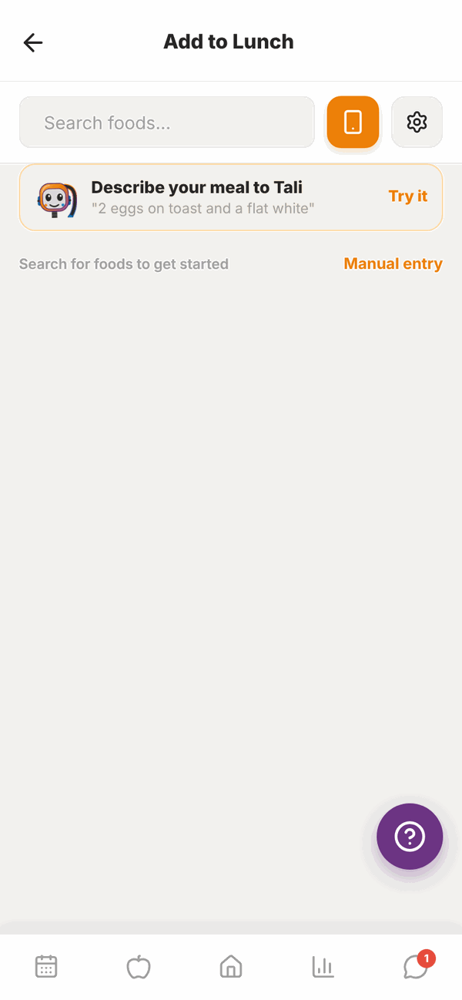
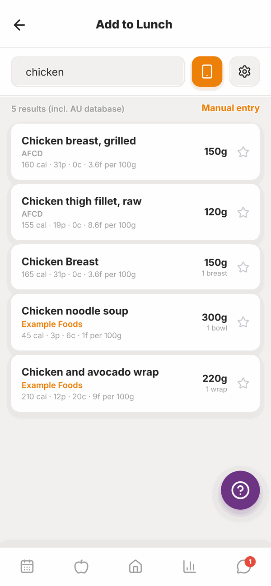
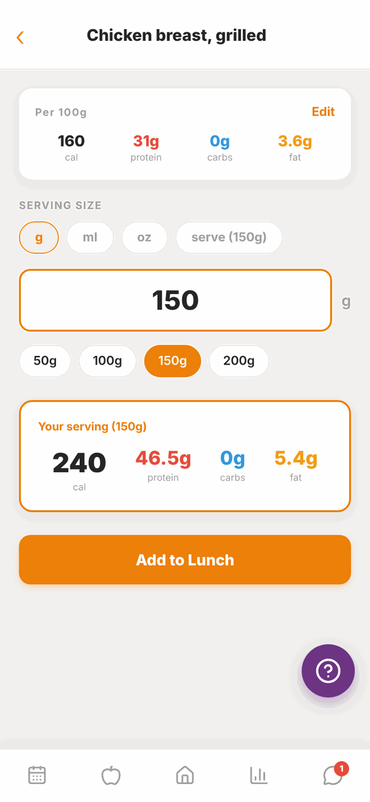
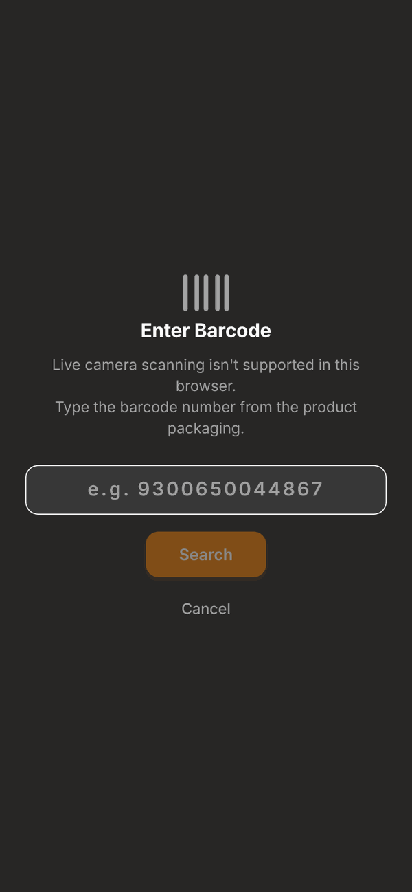
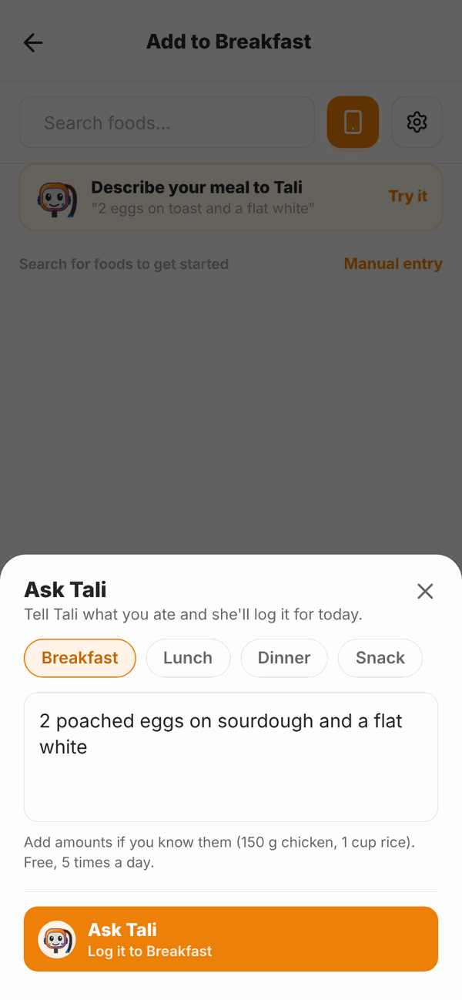
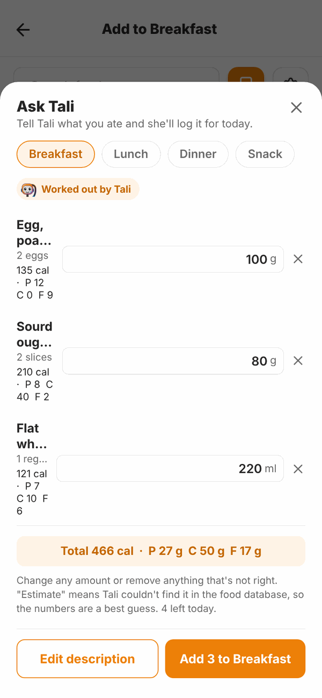
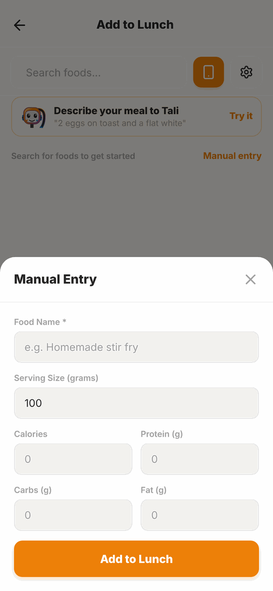

Totality for clients
Adding food
Four ways to log food: search, scan a barcode, tell Tali what you ate, or type it in yourself.
There are four ways to add a food. Use whichever is quickest for you.
- Search for it by name.
- Scan the barcode on the packet.
- Tell Tali what you ate in plain words.
- Type it in yourself with Manual entry.
Open the Add screen#
- Open your food log (the apple button at the bottom).
- Tap the orange + on the meal you're adding to, for example Lunch.
- The Add to Lunch screen opens.

1. Search for a food#
- Tap Search foods... and type what you ate, for example "chicken".
- Results show the name, the brand (if any), where the data comes from (like AFCD, the Australian food database), and calories and macros per 100g.
- Tap the food.
- Set how much you ate (see below).
- Tap Add to Lunch (or whichever meal).


Set the serving size#
- Tap the unit: g, ml, oz, or serve (when the food has a serving size, for example "1 wrap").
- Type the amount in the big box, or tap a quick size like 50g, 100g, 150g or 200g.
- Your serving shows the calories, protein, carbs and fat for that amount.
If the packet numbers look wrong, tap Edit on the Per 100g card and fix them before you add it.
If a product has no serving size on its label, it starts at 100g. Change it to what you ate.
Star your favourites#
Tap the star on any food in the list. Starred foods stay at the top of the Add screen, so the foods you eat every day are one tap away. Favourites are saved on that phone or browser.
Filter by brand#
Tap the settings button (the cog) next to the search box, then tap a Brand to only show that brand. Tap Clear filter to go back.
2. Scan a barcode#
- On the Add screen, tap the orange phone button next to the search box.
- Allow Totality to use your camera if it asks.
- Point your camera at the barcode and hold it inside the frame until you see Barcode scanned!
- Check the serving size and tap Add to ....
The food shows a Scanned from barcode label.

In some web browsers (like Safari and Firefox) live scanning isn't supported. You'll see Enter Barcode instead. Type the number under the barcode lines and tap Search.
If it says Not Found, that product isn't in the database yet. Search by name or use Manual entry.
3. Tell Tali what you ate#
Tali can turn a plain description into a list of foods with amounts.
- On the Add screen, tap Describe your meal to Tali (the card with Tali's face) or Try it.
- Check the meal at the top (Breakfast, Lunch, Dinner or Snack). Tap a different one to change it.
- Type what you ate, for example "2 poached eggs on sourdough and a flat white". Add amounts if you know them, like "150 g chicken" or "1 cup rice".
- Tap Ask Tali.
- Check the list. Change any amount in its box, or tap x to remove a food. Foods marked estimate weren't found in the database, so Tali guessed. check amount means Tali wasn't sure how much.
- Tap Add 3 to Breakfast (the number is how many foods). Or tap Edit description to change what you wrote.


Nothing is logged until you tap Add.
You can use Tali 5 times a day, free. Tali tells you how many you have left today.
If you see "Ask Tali isn't available on your account right now", that depends on your trainer's Totality plan. Check with them.
4. Type it in yourself#
Use this for homemade food or anything you can't find.
- On the Add screen, tap Manual entry.
- Type a Food Name, for example "Homemade stir fry".
- Type the Serving Size (grams).
- Type the Calories, Protein (g), Carbs (g) and Fat (g) for that serving.
- Tap Add to ....

Questions#
I can't find my food.
Try a shorter or different word ("yoghurt" instead of "Greek style yoghurt 1kg tub"). Check the brand filter is cleared. Or scan the barcode, tell Tali, or use Manual entry.
The barcode scanner won't open.
Allow camera access for Totality in your phone's settings. In a web browser that can't scan, type the barcode number instead. The phone app has the most reliable scanner.
Tali got the amount wrong.
Change the amount in the box before you tap Add. You can also edit any food later by tapping it in your food log.
How many times can I use Tali?
5 meal descriptions a day, free.
Where does the food data come from?
The Australian Food Composition Database (AFCD), Open Food Facts for packaged products, and foods other members have added. The sources are listed at the bottom of Settings under FOOD DATA SOURCES.
My favourites disappeared.
Favourites are saved on the device you starred them on. If you use a different phone or a browser, star them there too.